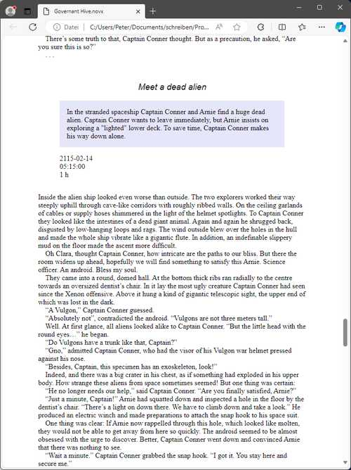

File menu
File operation
New
Create a new novel project
With File > New, you can create a new project. This will open a submenu.
Note
The submenu can be extended by plugins to add more file types from which a novelibre project can be created.
- Empty project
This will close the current project and create a blank project.
A file select dialog asks for the new project’s file name. If you cancel the dialog, you can select the file name later when saving the project.
- Create from ODT…
This will close the current project and open a file dialog asking for an ODT document to create the new projec from.
The newly created project is saved automatically in the same directory as the ODT document, using its file name and the extension .novx.
If a project with the same file name as the ODT document already exists in the directory, no new project will be created.
If you select a previously exported document belonging to an existing project, this project will be updated and loaded.
The ODT document can either be a Work-in-progress, i.e. a regular novel manuscript with chapter headings and section contents, or an outline containing the chapter and section structure with titles and descriptions.
Open…
Open a novel project
With File > Open or Ctrl-O,
you can open an existing project file.
Note
When opening a project, the current project will be closed. If there are unsaved changes, you will be asked for saving.
Reload
Reload the novel project
With File > Reload or Ctrl-R,
you can overwrite the project in the memory
with the last saved version.
Tip
This way you can undo changes made in the current session.
Note
If the project has changed on disk since last opened or saved, you will get a warning.
Restore backup
Restore the latest backup file
With File > Restore backup or Ctrl-B,
you can load the penultimate version of the project file.
This will overwrite the last saved project file.
You will get a warning, because changes may be lost.
Note
“Backup file” means the file with the .bak extension in the project directory.
After restoring the backup, a backup copy is no longer available in the project directory. A new backup copy is created when saving the project.
Refresh tree
Enforce tree refresh after making changes
With File > Refresh tree or F5,
you can refresh the tree.
“Normal” sections that have been moved to an “Unused” chapter are made “Unused”.
Parts and chapters are renumbered according to the Auto numbering settings.
The “Trash” chapter is moved to the end of the book, if necessary.
Lock
Protect the project while edited outsides
With File > Lock or Ctrl-L,
you can lock the project.
Note
All changes must be saved before locking the project.
Unlock
Make the project editable
With File > Unlock or Ctrl-U,
you can unlock the project.
Open Project folder
Launch the file manager
With File > Open Project folder or Ctrl-P,
you can launch the file manager with the current project folder.
This might come in handy, if you e.g. wish to delete files
or edit configuration files.
Hint
In case you edit the project “outsides”, consider locking it before.
Copy style sheet
Provide a css style sheet in the project folder
With File > Copy style sheet, you can copy the style sheet novx.css into the current project folder. This allows you to view the .novx project file with a web browser.
The following picture shows an Edge browser screenshot: novelibre project, displayed using the style sheet.
Hint
Depending on your web browser and your operating system, the
content type resp. MIME type of .novx files must be registered as
“text/xml”. Under Windows, you can do this by running the
<home>\.novx\add_novelibre.reg script.
Discard manuscript
Discard the current manuscript by renaming it
With File > Discard manuscript, you can add the .bak extension to the current manuscript. This may help to avoid confusion about changes made with novelibre and Writer.
Hint
You can also discard any previously exported document “for editing” via the Import dialog.
Save
Save the project
With File > Save or Ctrl-S,
you can save the project.
A backup copy is then automatically created.
Note
If the project has changed on disk since last opened, you will get a warning.
Save as…
Save the project with another file name/at another place
With File > Save as… or Ctrl-Shift-S,
you can save the project with another file name/at another place.
Then a file select dialog opens to specify the new path and file name.
Note
Your current project remains as saved the last time. Changes since then apply to the new project.
Close
Close the novel project
With File > Close, you can close the project without exiting the program. When closing the project, you will be asked for saving the project, if it has changed.
Note
If you open another project, the current project is automatically closed.
Quit/Exit
Exit the program
Under Windows you can exit with File > Exit or
Alt-F4.Otherwise you can exit with File > Quit or
Ctrl-Q.
Note
When exiting the program, you will be asked for saving the project, if it has changed.